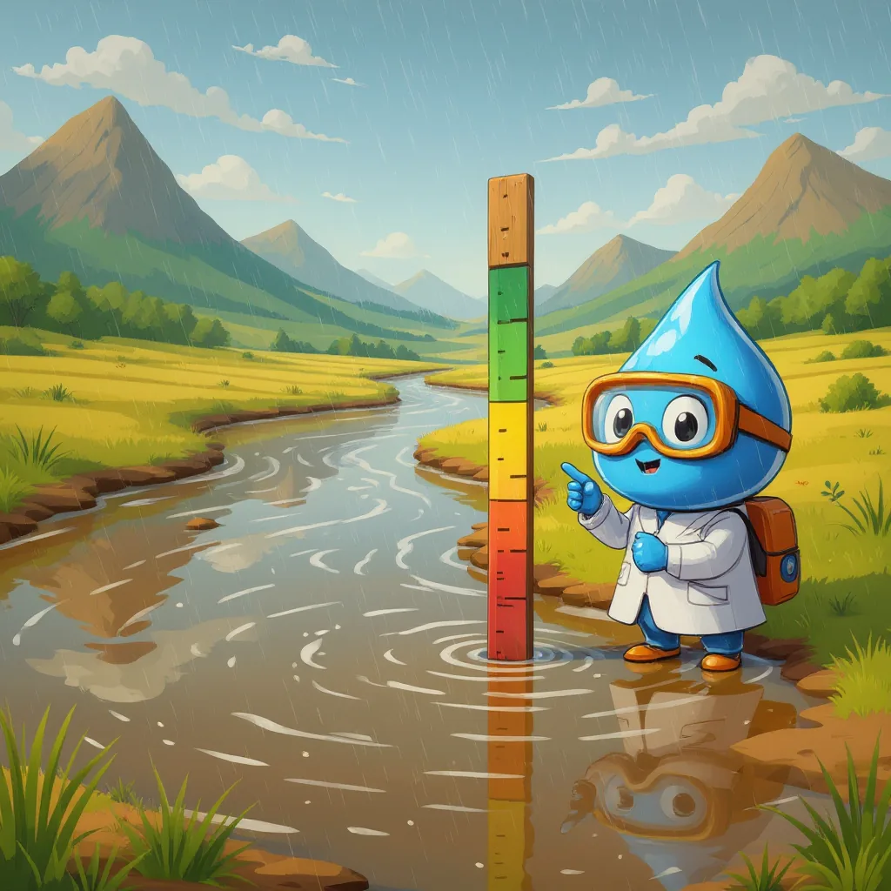
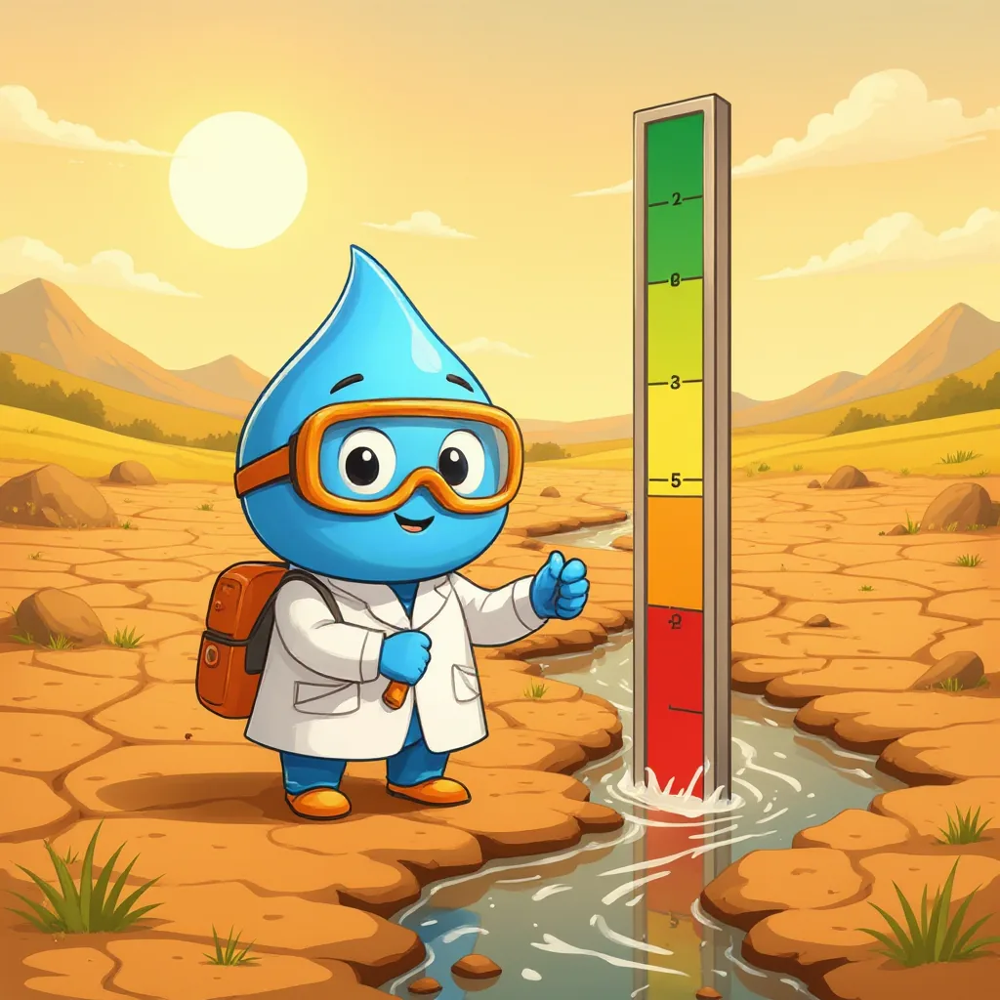
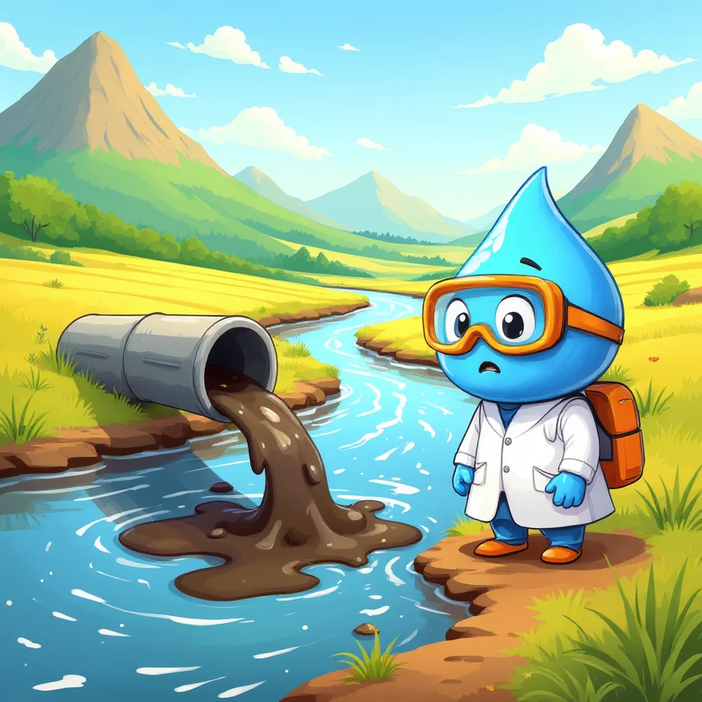
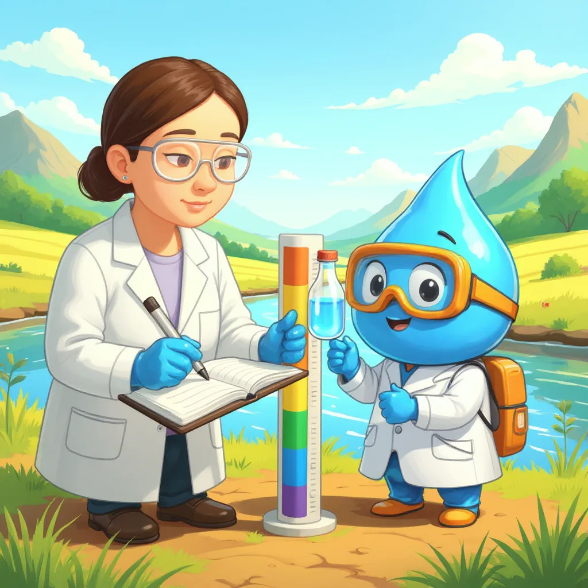
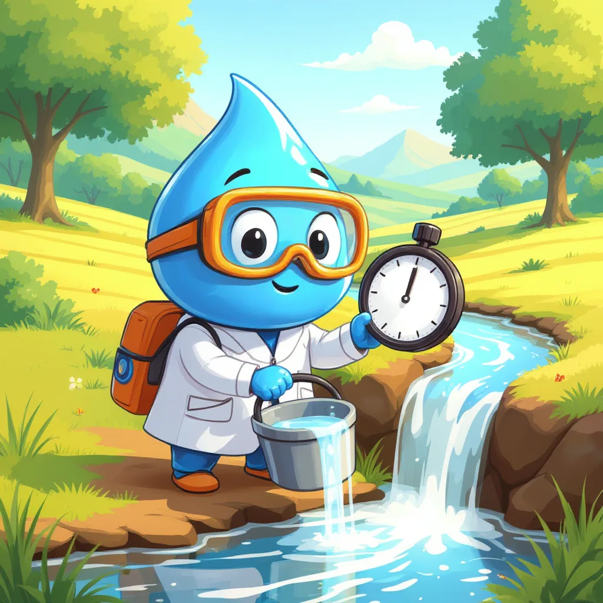

Cantidad y calidad del agua
¿Cuánta agua hay? ¿Y cómo está esa agua?
Gotita vigila el río
Mira las viñetas en orden.




📏 Cantidad
Para empezar, la cantidad de agua indica cuánta agua hay en un lugar y en qué momento está disponible. Esa agua no solo corre por los ríos: también se guarda en lagos, embalses, páramos, glaciares y en capas de roca bajo tierra, llamadas acuíferos, de donde sale el agua de los pozos. Por ejemplo, se mide en litros o metros cúbicos, y el agua que corre se mide como caudal, es decir, cuántos litros pasan por un punto cada segundo.
🔬 Calidad
Por otro lado, la calidad del agua indica si esa agua sirve para un uso sin causar daño a las personas, a los animales o al ambiente. Por eso, la calidad depende del uso: el agua para regar un jardín no necesita ser tan pura como el agua para beber. Así, para conocer la calidad, en el laboratorio se miden sus características, como el pH, el color o las sales disueltas.
¿Dónde se guarda el agua y cómo se mide?
Además, la cantidad cambia con el clima y con el uso. En época de lluvias los ríos crecen y los acuíferos se recargan; en cambio, en época seca, o con el fenómeno de El Niño, los caudales bajan. Por ejemplo, Colombia tiene mucha agua, pero gran parte está en la Amazonía y el Pacífico, mientras que la mayoría de la población vive en las regiones Andina y Caribe. Por eso, el agua debe repartirse con cuidado.

Un tanque de una casa tiene 1 metro de largo, 1 metro de ancho y 1 metro de alto.
- Volumen: 1 m × 1 m × 1 m = 1 m³.
- Como 1 m³ equivale a 1000 litros, el tanque guarda 1000 L.
- Si una familia gasta 500 L al día, el tanque dura 1000 ÷ 500 = 2 días.
La calidad depende del uso
Toca cada tarjeta para descubrir qué necesita cada uso.
¿Cantidad o calidad?
El río lleva menos agua en época seca.
El agua del río tiene mal olor.
El tanque de la casa se llena en dos horas.
El agua de la llave sale turbia después de una tormenta.
Un pozo alcanza para cien familias.
Los peces del lago mueren por falta de oxígeno.
Cuando la cantidad cambia la calidad
Sin embargo, cantidad y calidad están conectadas. Por ejemplo, si se disuelve una cucharada de sal en un vaso, el agua queda muy salada; en cambio, si esa misma cucharada se echa en una piscina, casi no se nota. Esto ocurre porque cambia la concentración, es decir, cuánta sustancia hay en cada litro de agua. Por eso, un río con poco caudal en época seca se contamina más fácilmente con la misma descarga.
Se vierten siempre 100 miligramos de una sustancia. Mueve el control para cambiar el agua disponible.
Concentración: 10 mg/L
mg/L significa miligramos por litro: la cantidad de sustancia que hay en cada litro. Este es un modelo simple; no indica si el agua es segura.
Mini-reto
Una fábrica vierte la misma cantidad de residuos todo el año. ¿Cuándo queda más concentrada en el río?
Un río tiene mucha agua. ¿Eso garantiza que su agua sea buena para beber?